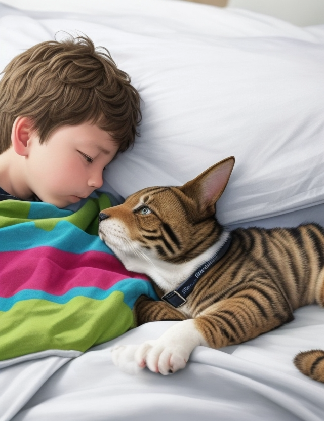

Дядя Фёдор, пёс и кот - продолжение 12.
Эдуард Успенский
Глава двадцать вторая. Домой
На другой день утро было прекрасное. На улице солнце светило и снег почти стаял. Выглянула тёплая поздняя осень.
Кот проснулся первым и приготовил чай. Потом корову подоил и дал дяде Фёдору молока. Папа говорит:
— Давайте дяде Фёдору градусник поставим. Может, он уже вылечился.
Поставили дяде Фёдору градусник, а Шарик говорит:
— А у меня нос — градусник. Если он холодный — значит, я здоров. А если он горячий — значит, заболел.
— Очень хороший градусник, — говорит папа. — Только как его стряхивать? И как другим ставить? Если я, например, заболею, мне что, твой нос под мышку совать?
— Не знаю.
— Вот то-то, — говорит папа.
А тут Хватайка слетел со шкафа — и к дяде Фёдору на кровать.
Он увидел, что у него что-то блестит под мышкой. Все на папу смотрели, а он градусник украл.
— Ловите его! — кричит папа. — Температура улетела!
Пока Хватайку ловили, такой шум стоял, что даже Мурка пришла из сарая в окошко смотреть. Всунулась она в комнату и говорит:
— Тьфу ты! И совсем не смешно.
Все так и сели. Надо же! Мурка разговаривает!
— Ты что, говорить умеешь? — спрашивает кот.
— Ага!
— А чего же ты раньше молчала?
— А то и молчала. О чём с вами разговаривать-то?.. Ой, салатик растёт!
— Это не салатик! — кричит кот. — Это столетник. — И Мурку в окошко вытолкал.
Поймали они температуру и увидели, что она была нормальной. Дядя Фёдор почти выздоровел. Мама говорит:
— Ты, сынок, как хочешь, но мы тебя в город заберём. За тобой уход нужен.
— А если ты кота хочешь взять, или Шарика, или ещё кого — бери. Мы возражать не будем, — добавляет папа.
Дядя Фёдор спрашивает у кота:
— Поедешь со мной?
— Я бы поехал, кабы один был. А Мурка моя? А хозяйство? А запасы на зиму? И потом, я уже привык к деревне и к людям. И меня уже знают все, здороваются. А в городе надо тысячу лет прожить, чтобы тебя уважать начали.
— А ты, Шарик, поедешь?
Шарик не знал, что и говорить. Только он своё место в жизни нашёл — фотоохотой занялся, а тут уезжать надо.
— Ты, дядя Фёдор, лучше поправляйся и сам приезжай.
Папа говорит:
— Мы все вместе будем к вам приезжать. В гости.
— Правильно, — говорит Матроскин. — Приезжайте к нам по воскресеньям на лыжах кататься. А летом в отпуск. А если дядя Фёдор в школу пойдёт, пусть он у нас каникулы проводит, летние и зимние.
Так они и договорились.
Мама дядю Фёдора укутала во всё тёплое и велела папе трактор накормить как следует. Потом она спросила у Матроскина:
— Что вам прислать из города?
— У нас тут всё есть. Только книжек маловато. И ещё я хочу бескозырку иметь с ленточками. Как у моряков.
— Хорошо, — говорит мама. — Я обязательно пришлю. И ещё я вам тельняшку достану. А тебе, Шарик, ничего не надо?
— Мне бы радио маленькое. Я буду в будке передачи слушать. И еще киноаппарат. Я буду кино про зверей снимать.
— Хорошо, — говорит папа. — Этим я сам займусь. Лично.
И они стали на трактор грузиться: мама, папа, дядя Фёдор и Шарик. Шарик должен был Митю обратно пригнать. И они поехали. Вдруг Матроскин из калитки выскакивает:
— Стойте, стойте!
Они остановились. И он им Хватайку подаёт:
— Вот, держите. Вам с ним веселее будет.
Папа из кабины спрашивает:
— Это кто там?
Хватайка отвечает:
— Это я, почтальон Печкин. Принёс журнал «Мурзилка».
И все про Печкина вспомнили. Мама говорит:
— Ох, как неудобно, мы совсем про него забыли…
— И правильно, — говорит Шарик. — Он такой вредный.
— Вредный он или не вредный, не важно. А важно, что мы ему велосипед обещали.
— Есть у вас здесь велосипед? — спрашивает папа.
— Нет, — говорит Шарик.
— А вот как сделайте, — предлагает Матроскин. — Купите ему лотерейных билетов на сто рублей. Пусть он что хочет, то и выигрывает. Хоть мотоцикл, хоть машину. Он же сам эти билеты продаёт. Ему двойная выгода получится. От продажи билетов и от выигрыша.
Так они и сделали. Купили у Печкина билетов и самому Печкину на почту отнесли. Почтальон даже растрогался:
— Спасибо вам! Я почему нехороший был? Потому что у меня велосипеда не было. А теперь я сразу добреть начну. И какую-нибудь зверюшку заведу, чтобы жить веселей: ты домой приходишь, а она тебе радуется!.. Приезжайте в наше Простоквашино…
Наконец они домой приехали. Дядю Фёдора сразу спать уложили с дороги. Потом побежали тельняшку, книжки и киноаппарат покупать. Потом все обедали. Особенно трактор. И мама всё уговаривала Шарика остаться ночевать. Но он не согласился:
— Мне здесь хорошо будет с вами. А Матроскин там один с хозяйством и с телёнком. Я ехать должен.
Тут мама говорит:
— Как же он один поедет на тракторе? Его же любой милиционер остановит. Так не бывает: собака — и за рулём!
Папа соглашается:
— Верно, верно. Боюсь, вся милиция по дороге начнёт за голову хвататься. И шофёры встречные тоже. Сколько же катастроф получится?!
Шарик говорит:
— Давайте мы вот как сделаем, чтобы милицию не волновать. Есть у вас очки и шляпа? И перчатки ненужные.
Папа всё принёс. Шарик нарядился; тельняшку надел и спрашивает:
— Ну как?
Папа говорит:
— Отлично! Отставной учёный адмирал на своём тракторе едет за город навестить родную бабушку.
Мама говорит:
— Что адмирал, это понятно, раз он в тельняшке. Что учёный, тоже ясно, потому что в очках. А при чём здесь бабушка?
— А притом. Грибов сейчас за городом нет. Ягод — тоже. Одни бабушки и остались.
Мама сказала:
— Всю жизнь ты одни глупости говоришь. И дурацкие советы даёшь. Это меня не удивляет. А вот почему твои глупости всегда правильными бывают, этого я понять не могу.
— А потому, — говорит папа, — что самый лучший совет всегда неожиданный. А неожиданность всегда глупостью кажется.
Шарик говорит:
— Это всё интересно, о чём вы говорите. Правда, я ничего не понимаю. Мне ехать пора. Только давайте не будем целоваться. Я нежностей не люблю.
И папа согласился. Он тоже не любил нежностей. И мама согласилась. Она любила нежности. Но она к Шарику не привыкла.
И Шарик уехал. А дядя Фёдор спал. И снилось ему только хорошее.